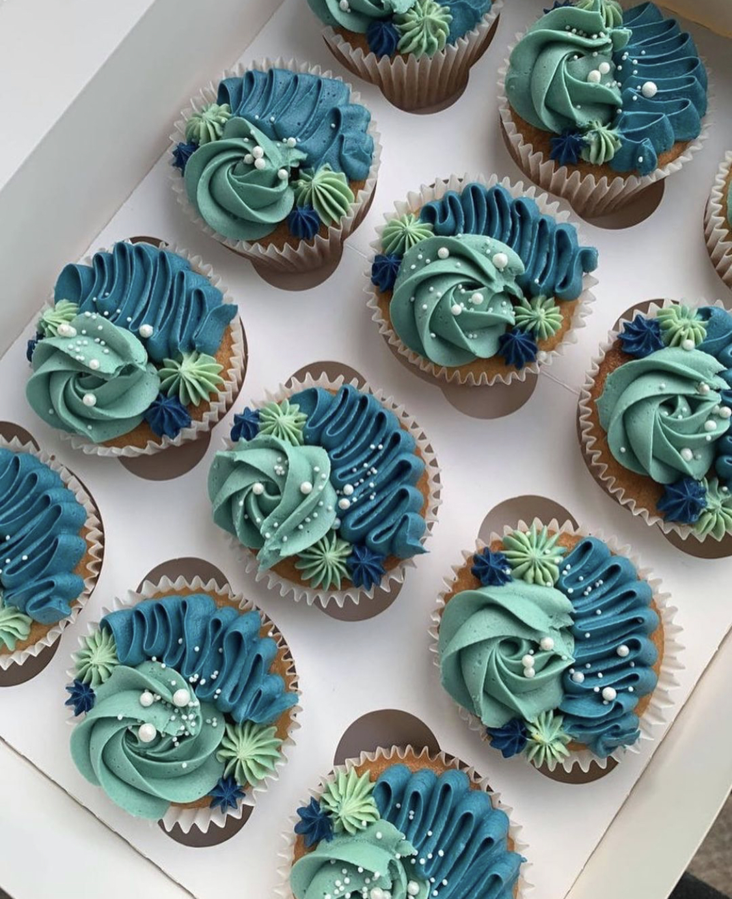
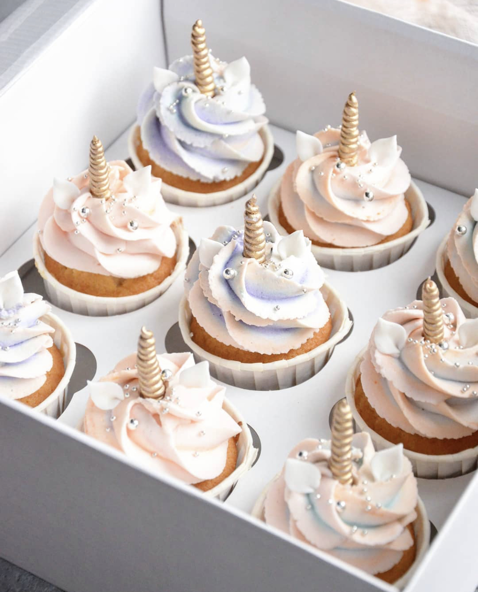

CUPCAKES
- "PATE"
- 2 Oeuf
- 120g Beurre très mou
- 140 g Farine
- 4 c à s Lait
- 100g Sucre
- ½ sachetLevure chimique
- 1 verre d'huile
- 1 pincée Sel
- 1 c à c Vanille (ou autre parfum)
- "GLACAGE"
- 50 g Beurre mou
- 2 c à c Lait
- 150 g Sucre glace
- 1 c à c Vanille liquide
- Colorant
- Préchauffez votre four à 180°c (th 6). Mélangez le beurre et le sucre au batteur électrique,
jusqu’à que la préparation blanchisse - Ajoutez les œufs un à un, puis la farine en pluie, le sel et la levure chimique.
Mélangez bien puis incorporez le lait et le parfum de votre choix - Déposez 2 cuillères à soupe de votre pâte dans vos moules à muffins ou autre. Mettez-les au four et laissez cuire 20 min.
Laissez-les refroidir une fois cuit - Préparez le glaçage le temps que les cupcakes refroidissent. Avec un batteur électrique battez le beurre en crème.
Lorsqu'il est ramolli, ajoutez peu à peu le sucre et la vanille. Mélangez pendant 5 min environ,
jusqu'à avoir une crème mousseuse. Si votre mélange est trop dense ajoutez 1 ou 2 cuillères à café de lait.
S'il est trop liquide ajoutez du sucre glace pour l’épaissir - Ajoutez du colorant si vous souhaitez. Une fois fois la pâte refroidie, coupez un peu le bout et glacez vos cupcakes
à l'aide d'une poche à douille ou d'une spatule. Décorez-les si vous le souhaitez.